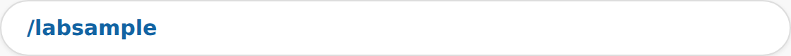
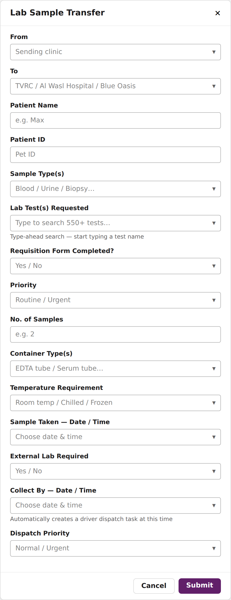
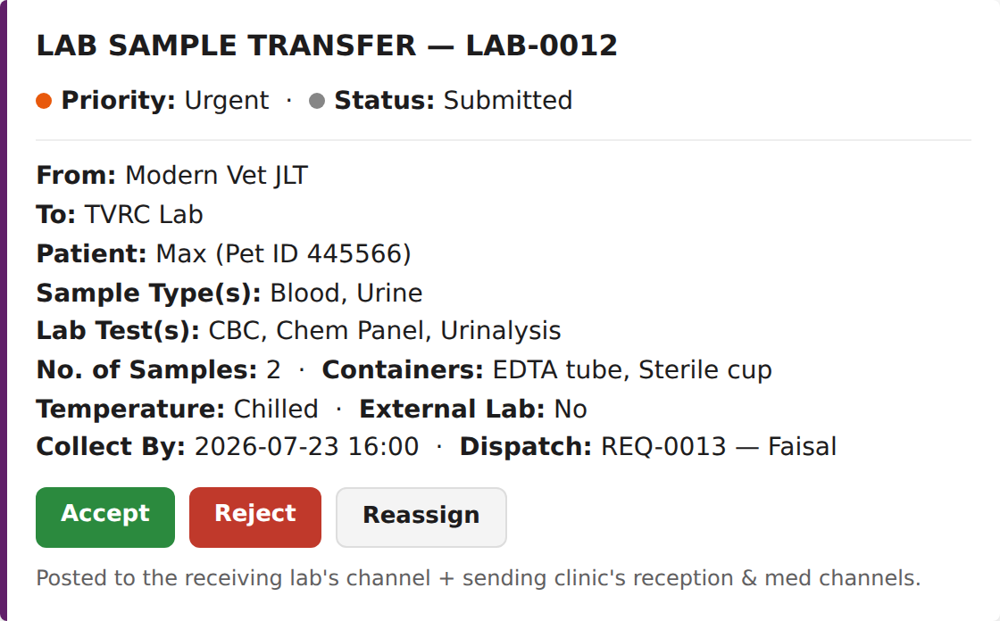
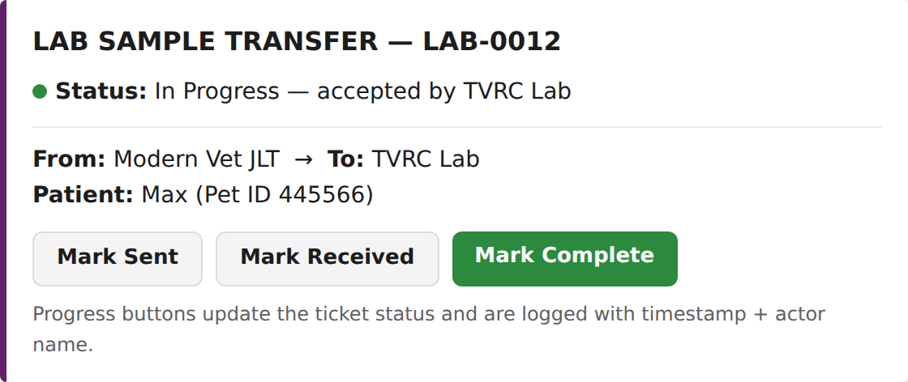
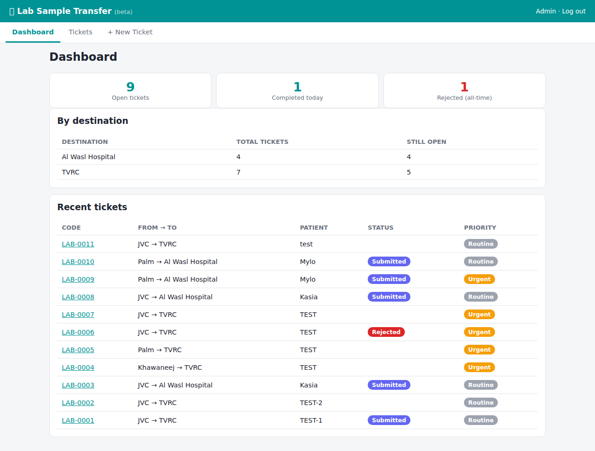
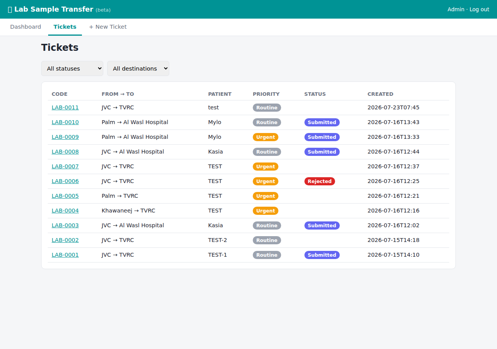
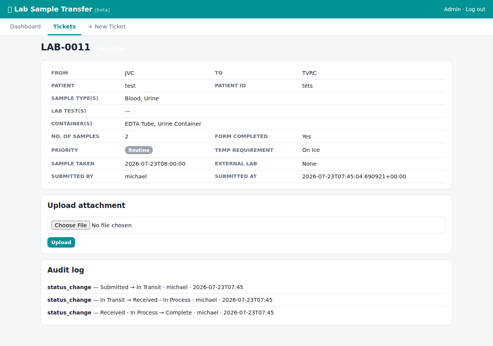
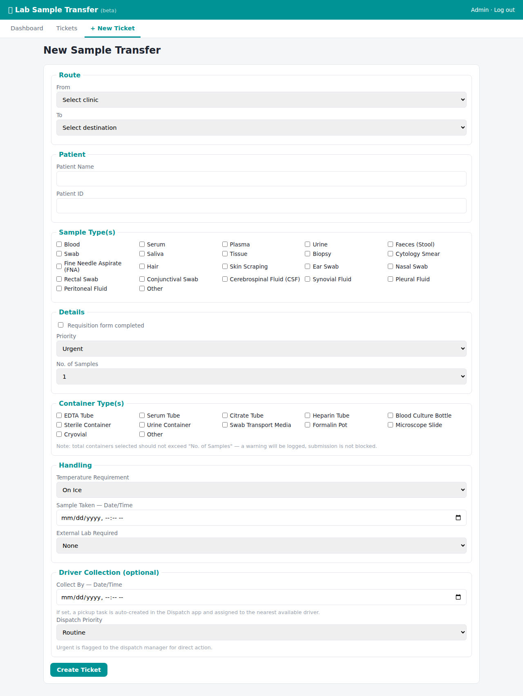

Sending a sample to TVRC, Al Wasl Hospital, or Blue Oasis lab? This app tracks every sample from the moment it's taken to the moment results are in — no more "did the sample arrive?" messages.
← All app manualsIn any Slack channel or DM, type /labsample and press Enter.

Pick From/To clinic, patient name & ID, sample type(s), and container type(s). Use the searchable Lab Test(s) Requested field to find the exact test from our full catalog of 550+ tests — just start typing.

If the sample needs a driver to physically move it, fill in Collect By — Date/Time. This automatically books a driver for you — no separate dispatch request needed.
Gets the full actionable card with Accept / Reject / Reassign buttons.

Get an informational copy so the sending team can follow the ticket.
If a Collect By time was given, a driver task auto-posts to #driver-dispatch.
The receiving lab confirms it's expecting the sample.
Asks for a short reason — the sender is notified immediately.
Sends the sample to a different lab instead. This creates a brand new ticket at the new destination, so it goes through its own fresh Accept step.
Mark Sent → Mark Received → Mark Complete — each click is logged with a timestamp and who clicked it, so there's always an audit trail.

For managers who want to see everything in one place: vetalliance.website/lab-app



